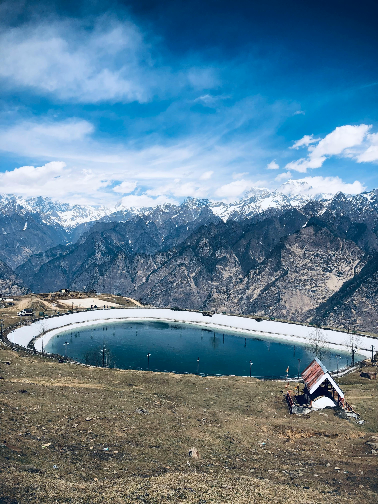
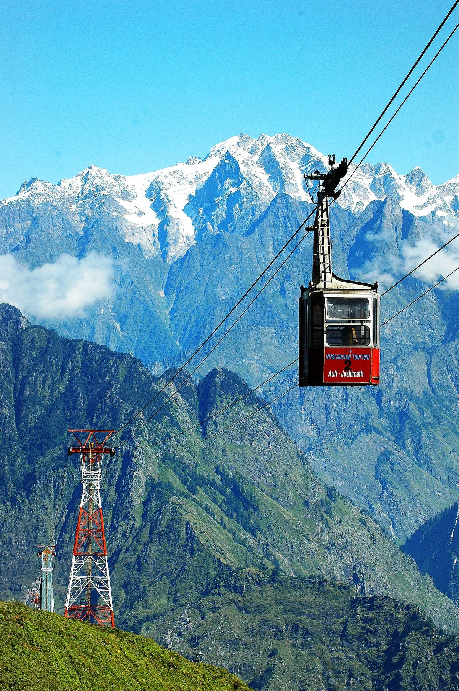
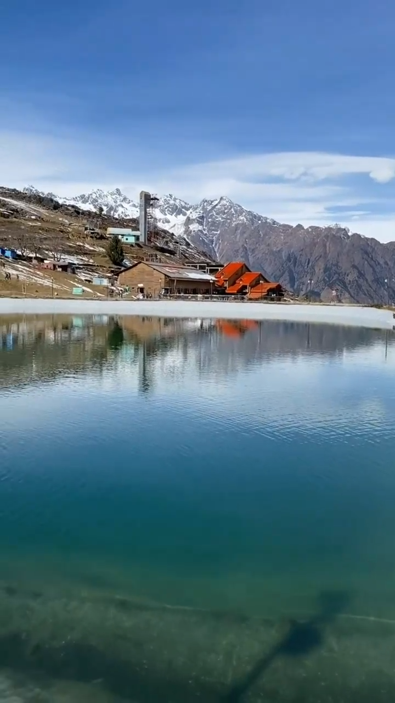

Auli
The Skiing Paradise of India
The Skiing Paradise of India
Auli is a beautiful hill station located in Chamoli district of Uttarakhand. It is one of India’s top skiing destinations, famous for its snow-covered slopes, scenic Himalayan views, and Asia’s longest cable car.



Auli offers various adventure and leisure activities throughout the year. During winters, skiing is the main attraction, while summers are perfect for trekking and sightseeing.
December – February: Snowfall & skiing
March – June: Pleasant weather & sightseeing